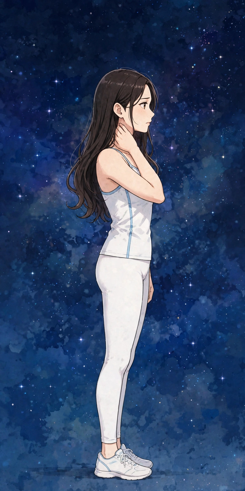

三ノ宮で寝つきにくい夜のケア心・睡眠

布団に入っても目が冴えて、今日の出来事や明日の予定が頭の中をぐるぐる回る。体は疲れているのに、肩や首に力が入ったまま抜けない。そんな夜が続くと、眠ること自体が少し億劫になっていきます。
神戸・三ノ宮の女性専用サロン「ステラスピカ」では、寝つきにくさの背景にある体の緊張に目を向け、首・肩・胸まわりをゆるめるケアをご案内します。眠りに向かう体の整え方を、一緒に確認していきましょう。
寝つきにくい夜の緊張はどんな状態か
日中の緊張は、肩をすくめる、奥歯を噛みしめる、呼吸が浅くなるといった体の反応として残ります。横になってもその反応が抜けきらないと、体は休んでいるのに「まだ活動中」のような状態が続き、眠りの入口に立ちにくくなります。
考えごとが止まらない夜は、頭の働きと体の緊張が互いに強め合っていることも少なくありません。寝つきにくさは気の持ちようではなく、体に残った緊張の表れとして捉えることができます。
こんなサインはありませんか？寝つきの緊張チェック
- 布団に入ってから眠るまで30分以上かかることが多い
- 横になっても肩や首に力が入っている感じがする
- 眠る直前まで考えごとが止まらず、頭が冴える
- 呼吸が浅く、胸のあたりがつかえるように感じる
- 寝る直前までスマートフォンを見ている
- 夜中に何度も目が覚め、そのあと眠りにくい
- 休みの前日は眠れるのに、仕事の前日は眠りにくい
- 朝起きても疲れが残っていて、一日中眠い
寝つきにくさにつながりやすい要因
- 日中の緊張の持ち越し ― 仕事や家事で張りつめた時間が長いほど、体の緊張は夜まで残ります。特に肩・首・胸まわりは緊張が抜けにくい場所です。
- 就寝前の画面時間 ― スマートフォンやパソコンの光と情報は、頭の働きを活発なままにします。眠る直前までの使用は、眠りの入口を遠ざける要因になります。
- 呼吸の浅さ ― 緊張が続くと呼吸は速く浅くなりやすく、胸まわりが固まります。呼吸が浅いまま横になると、体が休まる合図を受け取りにくくなります。
- 夜の冷えと末端の冷たさ ― 手足が冷えたままだと寝つきにくくなると言われます。体の中心と末端の温度のバランスも、眠りに入る準備の一部です。
- 生活リズムのゆらぎ ― 就寝・起床の時刻が日によって大きくずれると、眠くなるタイミングそのものが不安定になります。休日の寝だめもゆらぎの一因です。
- カフェインや食事の時間 ― 夕方以降のカフェインや、就寝直前の食事は、体を活動モードに保ちます。内容だけでなく時間帯の影響も見逃せません。
図1｜緊張が残りやすい首・胸・お腹（正面）

東洋医学から見た考え方
東洋医学では、心の働きと眠りは深く関わると考え、心が落ち着かない状態では眠りも浅くなりやすいとされます。一日の活動で高ぶった気が夜になっても静まらないと、寝つきにくさや途中で目覚めやすさにつながると捉えます。
胸の中央を通る心包経や、手首から心へつながる心経は、緊張や胸のつかえと関係づけて考えられる経絡です。当店では胸まわりと首・肩をゆるめ、呼吸が深くなる流れを意識してケアを組み立てます。
代表的なツボ
寝つきにくい夜のケアに知っておきたい代表的なツボを3つご紹介します。手首と足首にあり、布団の中でも触れやすい場所です。
手首の内側、小指側の端にあるくぼみで、手のひら側の横じわの上にあります。心の働きと関わりが深いとされるツボです。反対側の親指で、小さな円を描くようにゆっくりほぐすと使いやすくなります。
手首の内側中央、手のひら側の横じわから指3本分ほど肘寄りにあります。胸のつかえや気持ちの張りと関係づけて考えられるツボです。親指を当て、呼吸に合わせてゆっくり圧をかけたり離したりしてみてください。
内くるぶしの一番高いところから指4本分ほど上、すねの骨の後ろ際にあるツボです。冷えや巡りとも関わる場所で、足湯のあとなど温まった状態で触れると分かりやすくなります。力を入れすぎず、包むように押すのがコツです。
図2｜寝つきに関わるツボの位置（正面）
おすすめの施術
おすすめ：オイルマッサージ＋美容整体
寝つきにくい夜のケアでは、強い刺激よりも、緊張をほどく流れを大切にします。オイルマッサージでは、首から肩、胸まわりをゆっくりとした圧でゆるめ、呼吸が深くなるペースで進めます。手首まわりなど、ツボのある場所も意識しながらケアします。
仕上げの美容整体では、猫背で固まりやすい胸の開きや骨盤の傾きを確認し、横になったときに力が抜けやすいバランスを整えます。就寝前の過ごし方の工夫も、状態に合わせてご案内します。
自宅でできるセルフケア
眠りの準備は、布団に入る前から始まっています。夜の習慣として取り入れやすいものからどうぞ。
- 1. 寝る前の深呼吸布団に入ったら、鼻からゆっくり吸い、口から細く長く吐く呼吸を5回ほど繰り返します。吐く時間を長めにすると、胸まわりの力みが抜けやすくなります。回数よりもゆっくりが大切です。
- 2. 首・肩の蒸しタオル濡らして絞ったタオルを電子レンジで温め、首の後ろから肩にかけて数分当てます。日中の緊張が残る場所を温めることで、体が休む準備に入りやすくなります。温度は手で確かめてからどうぞ。
- 3. 脚の温め（足湯）洗面器に少し熱めのお湯を張り、10分ほど足首まで浸します。冷えた末端を温めると体全体がほぐれる感覚が得られやすくなります。就寝の30分〜1時間前が目安です。
- 4. スマホを置く時間の目安就寝30分前には画面を置く時間を決めてみてください。代わりにストレッチや温かい飲み物など、画面の代わりになる夜の手順を用意すると続けやすくなります。
図3｜寝る前の深呼吸のイメージ（横向き）

場面別の注意
仕事の緊張が残る夜
帰宅後の切り替えの手順を決めておくと、緊張を持ち込みにくくなります。着替え、入浴、軽いストレッチなど、体に「一日の終わり」を知らせる流れを作ってみてください。
休み明けの夜
休日に起床時刻が大きくずれると、夜の眠気がずれてしまいます。休日も起きる時刻を平日と近づけ、朝の光を浴びることで夜の眠気のタイミングが整いやすくなります。
考えごとが止まらない夜
頭の中だけで抱えず、明日の予定や気になる事を紙に書き出してから布団に入る方法があります。書き終えたら照明を落とし、呼吸に意識を向けてみてください。
受診の目安
次のような場合は、まず医療機関への受診をご検討ください。
- 眠れない状態が長く続き、日中の生活に支障が出ている
- いびきが大きく、呼吸が止まっていると指摘されたことがある
- 眠れないことに加え、気分の落ち込みが続いている
- 脚のむずむず感などで横になっていられない
- 市販の睡眠改善薬などを使っても眠れない日が続く
当店は医療機関ではなく、診断は行いません。気になる症状がある場合は、施術の前に医療機関でご相談ください。
よくある質問
施術を受けると、その夜は眠りやすくなりますか？
施術後は首や肩の力が抜け、体がゆるんだ感覚を得られる方が多いです。ただし眠りには生活リズムや環境も関わるため、夜の過ごし方の工夫と合わせて取り組むことをおすすめします。
寝つきの悪さに施術はどのくらいの頻度がよいですか？
状態によりますが、まずは月1〜2回を目安に、緊張の残り方を確認しながら進める方が多いです。夜の習慣の見直しと並行すると、変化を感じやすくなります。
夕方の施術でも大丈夫ですか？
はい。当店は17:00〜22:00の営業のため、仕事帰りのご利用が中心です。施術後は刺激の強い予定を避け、そのまま帰宅してゆっくり過ごす流れがおすすめです。
眠れないのは病気でしょうか？
眠りにくさの背景は様々で、当店では判断できません。長く続く場合や日中に支障がある場合は、医療機関で相談されることをおすすめします。気になる点はご予約時にもお伝えください。
関連するお悩みページ
関連する経絡ページ
ご予約
ステラスピカ（神戸・三ノ宮／女性専用）｜オイルマッサージ・美容整体 90分 10,000円｜月〜土 17:00〜22:00・完全予約制
ご予約はLINEで受け付けています。ご予約の際に「寝つきにくい夜が気になる」とお伝えいただければ、その日の状態に合わせて施術を組み立てます。